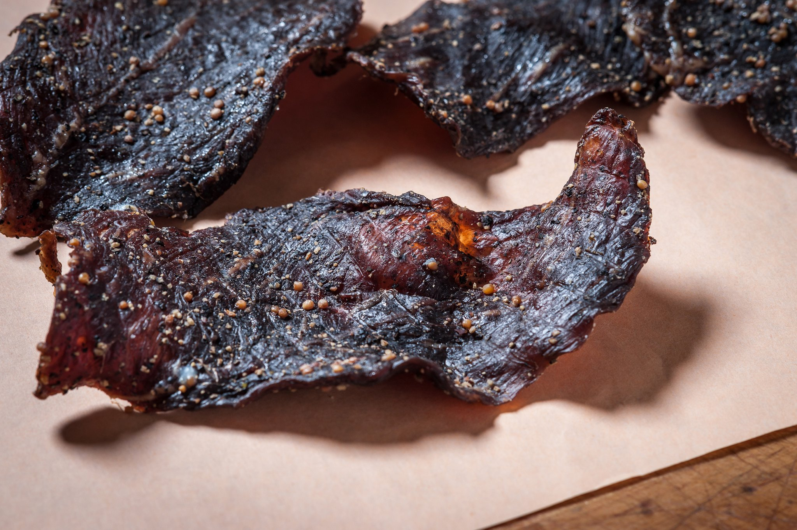

Beef Jerky

This jerky is great. Easy to make. It can be made with some heat to it also, just add some of your favorite hot sauce to the marinade. I've made this jerky countless times. It doesn't last long at my house and I bet it won't at yours either. Gather your ingredients and get your dehydrator ready. If you don't have a dehydrator you can do this in your oven also. Just put your oven on the lowest setting and leave the door cracked open a bit. Check it after a couple of hours.